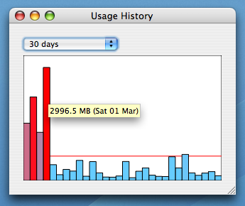

Feel free to send me criticism, adoration and comments. My email address is at the bottom of this page.
This is a Mac OS X usage meter for Internode ADSL, running in your menu bar. It requires Mac OS X 10.5 (Leopard), or later.
David Symonds <dsymonds@gmail.com>